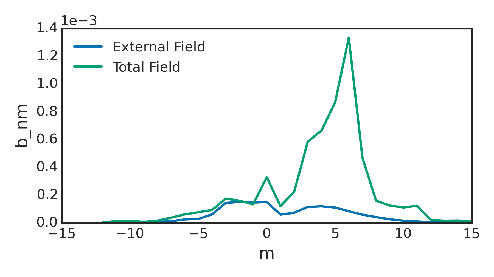

When comparing spectral GPEC outputs to real space quantities or to other codes, it is important to remember
The result of this is that the pitch-aligned field will always be positive m. This convention makes in-house analysis nice and easy. For example, one can always plot the m=2 perturbed normal displacement profile and see the resonant surface behavior at q=2. The m=-2 normal displacement will always be nonresonant. This is shown in the figure below from the package DIII-D example, which is a LH plasma.

For another example, the figure below shows a that the positive m fields are magnified for a DIII-D example control surface. We always look here for kink amplification.
The convention does require some awareness from the user when interfacing with real-space quantities and/or other codes though. For example, the user does need to know that the spectrum rotates by \(-\phi\) if real space coil rotates by \(\phi\) in a RH configuration.
To facilitate interfacing with other codes that may have different handedness conventions, the helicity is included in the gpec_control_output netcdf file. The helicity is defined as +1 for right handed plasmas in which Bt and Ip are in the same direction, and -1 for left handed plasmas in which Bt and Ip are apposed.
In the real space representation decomposed in \(\exp(-in\phi)\) with CCW \(\phi\), GPEC takes the complex conjugate of the inverse poloidal Fourier transform for RH configurations. This is restoring CCW \(\phi\) (according to 2), and is done internally before writing function outputs. Note in the full Fourier representation by \(\exp(im\theta-in\phi)\), the complex conjugate operation does not simply restore CCW phi for RH configurations. It will also flip up and down.
SURFMN is a popular vacuum spectrum code. It calculates the field from experimental coil geometries and/or intrinsic error fields in magnetic coordinates on plasma flux surfaces. SURFMN also uses upward outboard \(\theta\). However, it expands in \(\exp(-im\theta-in\phi)\) and always uses a CCW \(\phi\). In SURFMN, the pitch resonant m can flip sign dependending on the sign of Bt and Ip.
As a practical example, interfacing a Fourier representation of the 3D field on a flux surface from GPEC with SURFMN would require using,
m_surfmn = helicity * m_gpec
b_surfmn = real(b_m) - i * helicity * imag(b_m).
For LH configurations only the sign of m is flipped (according to 1). For RH configurations, m remains unchanged but the complex conjugate is taken (the combined effect of to 1 & 2).
Vacuum is the code used in DCON to calculate the vacuum energy matrices, which combine with the plasma energy matrix to describe the full system eigenmodes. The VACUUM code uses CCW \(\phi\) and downward outboard \(\theta\). We thus use the complex conjugate of RH configurations to interface GPEC and VACUUM.
There are up to 3 separate coordinate systems use in the programs within GPEC package. This include,
The DCON working coordinate system is used for nearly all internal calculations in the GPEC package, but the external drive may be prescribed in input coordinates (2) and the final perturbed equilibrium results may be converted to output coordinates (3). The working coordinates are magnetic cooridinates. The input and output coordinates may be converted to cylindrical \(\phi\) using the tmag_in or tmag_out variables.
The gpec_control_output_n#.out netcdf file gives spectral quantities in the working coordinates (specified in the ‘jacobian’ attribute). It also provides a J_out matrix. The dot product of this matrix and the b or xi spectra will convert the the output coordinates, reproducing the final table of the gpec_control_n#.out ascii output. Note that the same transformation cannot be safely made for other weighted quantities.
The GPEC outputs are entirely specified by flags (bool types t or f) set in the GPEC_output section of GPEC.in. All outputs are ASCII files, and can be grouped into two major categories.
A number of the flag options in GPEC.in instruct GPEC to output ASCII file data. Some of these outputs are always available. Some, however, require a input error field instead of a hard coded harmonic_flag call. Both groups are listed in detail here.
Outputs Always Available
These GPEC outputs can always be obtained from a equil.bin file output from DCON.
GPEC_response_n#.out
Flag resp_flag
Info Energy for DCON eigenmodes and stability indices. Eigenvalues and eigenvectors for vacuum and plasma inductance (virtual casing currents to fields), plasma permeability (external fields to total fields), and plasma reluctance.
GPEC_singcoup_matrix_n#.out
Flag singcoup_flag
Info The coupling matrix to resonant fields, coupling matrix to singular currents, and to island half-widths is given for each rational surface within the plasma (q=2, 3, etc) for each surface the real and imaginary coupling constants are given for each poloidal mode number on the control surface.
GPEC_singcoup_svd_n#.out
Flag singcoup_flag
Info The SVD singular values (s) and eigen vectors for each coupling matrix in GPEC_singcoup_matrix_n#.out. Large s corresponds to large amplification, with the largest (most important mode) listed at the top. The results should be dotted with the unweighted normal field spectrum to give physical meaning.
Outputs Available When Error Field is Provided
These outputs are only available when an external error field file is provided as an input to GPEC. This means GPEC.in must have the data_flag turned on and a infile specified.
GPEC_control_n#.out
Flag
Info The Plasma response for an external perturbation on the control surface. This includes the vacuum energy, surface energy, plasma energy, real and imaginary vacuum input mathbf{B}_{in} and total field on plasma boundarymathbf{B}_{out}as a function of poloidal mode number.
GPEC_singfld_n#.out
Flag singfld_flag
Info The Psi_{N}, total resonant mathbf{B} (real and imaginary), singular current (real and imaginary), island half width in units of normalized flux and Chirikov parameter at rational surface inside the plasma.
Flag singcoup_flag
Info Additional section showing the overlap field and overlap percentage for each eigenmode in the singcoup_svd output.
GPEC_pmod_n#.out
Flag pmodb_flag
Info Eulerian and Lagrangian left|mathbf{B}right|(real and imaginary) for each poloidal mode number at each value of Psi_{N} output. This output is necessary for NTV post processing.
GPEC_xbnormal_n#.out
Flag xbnormal_flag
Info The normal components of the displacement, magnetic field without the plasma response, and magnetic field with the plasma response included for each poloidal mode number at each value of Psi_{N} output.??
GPEC_*rzphi_n#.out
A number of output files have a similar structure. Here the * in the file name is replaced by the appropriate leading letters of the corresponding flag. For example the xrzphi_flag for n=1 creates a GPEC_xrzphi_n1.out file. some common properties of these files are:
real and imaginary components: Output files contain two dimensional data on an left(r,zright) grid for a single toroidal harmonic. To translate into three dimensions, perform the transformationBleft(r,z,phiright)=B_{real}left(r,zright)cosleft(nphiright)+B_{imag}left(r,zright)sinleft(nphiright)
l parameter: 1 designates points inside plasma, 0 points in vacuum, -1 points near/on surface (singularity)
Flag eqbrzphi_flag
Info The original equilibrium field on a left(r,z,phiright) grid.
Flag brzphi_flag
Info The left(r,z,phiright)components of the perturbed magnetic fields inside the plasma on the left(r,z,phiright) grid.
Flag xrzphi_flag
Info The displacement on the left(r,z,phiright) grid.
Flag vbrzphi_flag
Info The false perturbed magnetic field in the vacuum region on the left(r,z,phiright) grid calculated using the GPEC boundary surface current composed of both the vacuum component and the plasma response.
Flag vpbrzphi_flag
Info The true perturbed magnetic field in the vacuum region on the left(r,z,phiright) grid due to the plasma response alone calculated from the plasma response surface condition.
Flag vvbrzphi_flag
Info The false perturbed magnetic field in the vacuum region on the left(r,z,phiright) grid calculated using the GPEC boundary surface current from the external fields alone.
Flag ssbrzphi_flag
Info The false perturbed magnetic field in the vacuum region on the left(r,z,phiright) grid calculated using the GPEC boundary surface current from the external fields alone.
These files are designed for quick and easy visualization of results using the xdraw command. For more details on using xdraw see the devoted section on this page.
xbnormal.bin
Flag bin_flag
Info The normal displacement and magnetic field as functions of Psi_{N} for xdraw.
xbnormal_2d.bin
Flag bin_2d_flag
Info Contour profiles of the normal displacement and magnetic field in (R,z) for xdraw.
pflux_re(im)_2d.bin
Flag bin_2d_flag
Info Contour profiles of the real (imaginary) perturbed flux in (R,z) for xdraw.
bnormal_spectrum.bin
Flag bin_flag
Info Surfmn type contours of the normal perturbed magnetic fields as a function of poloidal harmonic number and Psi_{N}.
The binary GPEC outputs can be viewed using the commandxdraw filenamewhere filename is one of the .bin files created by GPEC (“.bin” excluded). This is a quick way to view results immediately as they are produced. The xdraw tool provides a highly interactive environment that takes keystroke inputs to change plot display options, navigate plots, display single or multiple responses at once, do limited post processing (get a gradient, or ratio), and save figures. For a full list of the command options, enter the xdraw environment and press “k”.
{kind=link}